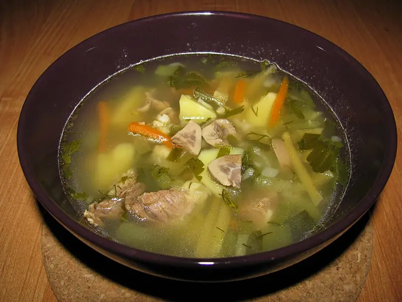

Фото: Шнапс, CC BY-SA 3.0

Рассольник
Ленинградский рассольник на говяжьем бульоне с перловкой и солёными огурцами
120 мин6 порц.304 ккал на порциюБ 19 · Ж 14 · У 24Русская кухня
Продукты на 6 порц.
- Говядина500 г
- Вода2,5 л
- Перловка0,5 стак.
- Огурцы солёные4 шт
- Картофель3 шт
- Морковь1 шт
- Лук репчатый1 шт
- Растительное масло1 ст. л.
- Лавровый лист2 шт
- Соль1 ч. л.
- Перец чёрный молотый1 щеп.
- Укроп по желаниюпо вкусу
Как готовить
- Залейте говядину холодной водой, доведите до кипения на сильном огне, снимите пену. Варите на слабом огне 1 час.
- Перловку промойте и отварите отдельно в другой кастрюле 30 минут, воду слейте.
- Достаньте мясо, нарежьте и верните в бульон. Добавьте перловку и картофель кубиками, варите 15 минут.
- Огурцы натрите на крупной тёрке, морковь тоже натрите, лук нарежьте мелко.
- Положите в суп морковь, лук, огурцы и масло. Варите 10 минут на среднем огне.
- Попробуйте и досолите, если нужно. Добавьте лавровый лист и перец, варите 3 минуты, выключите и посыпьте укропом.
Совет. Солите в самом конце: огурцы дают много соли. Если кислинки мало, влейте 100-150 мл огуречного рассола.